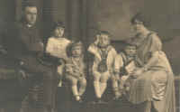
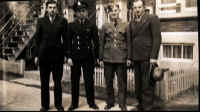
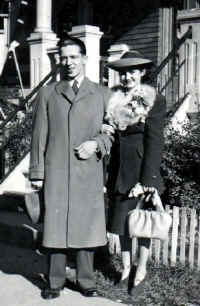
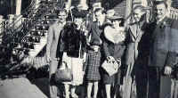
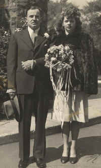
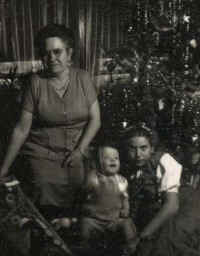
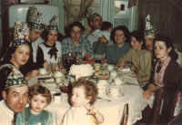
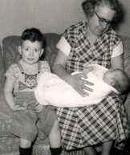
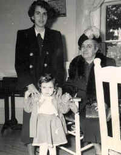

|
THE
DESCENDANTS OF
MARIE-ANNA AND ROSARIO
|

Rosario and Marie-Anna's family, winter
1926
(Marie-Anna is expecting Jean-Noël)
|

Rosario and Marie-Anna's four sons
Jean-Noël, Rosaire,
Gérard, Benoît
|
April 22,
1918. Monday morning, 6 o'clock, at 1121 Saint-Antoine: birth of
Marie Thérèse Marguerite Rosianne , first child of Rosario
Charette and Marie-Anna Caron. Her godparents are
Alphonse Charette Sr. and Rosianne Miron, her paternal great-grandparents.
The porteuse (the woman who carries the baby to the font) is "Mde Z. Laframboise, grand-mère",
that is, Alphonsine. She is baptized by Father Paiement at Saint-Henri church.
(source:
a little notebook in which Marie-Anna recorded the births)
December
15, 1919. Sunday around midnight, at 444 Sainte-Émélie, Rosario and Marie-Anna have their
first son, Joseph Léo Fernand Benoît. His godparents
are Zénon Laframboise and Alphonsine Gagnon, his maternal grandparents. The
porteuse is Mrs. S. Bédard, a great-aunt on his mother's side. He is baptized by Father
Potvin, curate at Saint-Zotique church. (source:
a little notebook in which Marie-Anna recorded the births)
October 19, 1921. Wednesday, around 3 o'clock in the morning, at 444
Sainte-Émélie: birth of Joseph Jean Paul Gérard. His godparents
are Jean Caron and Nellie Villemaire, his uncle and
aunt. The porteuse is "Mde Z. Laframboise, grand-mère",
that is, Alphonsine. He is baptized by Father Potvin at Saint-Zotique church.
(source:
a little notebook in which Marie-Anna recorded the births)
June 28, 1923. Thursday, at 9 o'clock in the evening, at 284
Saint-Philippe: birth of
Joseph Armand Rosario Alphonse. In fact he will go by the name Rosaire. His godparents
are Aldéric Lavoie and his wife Rose-Anna Charette, his great-uncle and great-aunt.
The porteuse is "Mme Lavoie arrière-grand-mère" (great-grandmother), that is,
Anastasie Lortie-Lavoie, Rosario's maternal great-grandmother. He is baptized
at Saint-Henri church. (source: a little
notebook in which Marie-Anna recorded the births)
July
26, 1926. Monday, 5:30 in the morning, at 266 Saint-Philippe:
birth of Joseph Jean-Noël. His godparents are Joseph and Clara
Alexander (née Caron), his great-uncle and great-aunt on his mother's side. The porteuse is Nurse
Viau. He is baptized at Saint-Henri church. (source:
a little notebook in which Marie-Anna recorded the births)
For each birth
Rosario gives Marie-Anna a present. For Jean-Noël's she
receives a grandfather clock.
March 26, 1931. Marie-Anna gives birth to a "stillborn
child", a
girl. (source: a little notebook in which Marie-Anna recorded the births)
October 3, 1935. Thursday, during the night, at the Ste-Jeanne d'Arc hospital: birth of
Marie-Anna Françoise Ghislaine. Her godparents are Benoît and Thérèse
Charette, her brother and sister. The porteuse is Mrs. J. Caron,
that is, her aunt Nellie, Jean Caron's wife. She is baptized by
Father Potvin at the Sainte-Jeanne-d'Arc hospital. (source:
a little notebook in which Marie-Anna recorded the births)
THE WEDDINGS OF
MARIE-ANNA
AND ROSARIO'S CHILDREN
From 1941 to 1948 Marie-Anna
marries off all her children except her youngest, Ghislaine, who is a boarder
during the school year and who will choose the religious life in the early
1950s.
|

Thérèse
marries Gérard Cantin on October 9, 1941.

Rue St-Gérard, the Charette family
|

Benoît
marries Cécile Deneault on May 31, 1945. He lives with his
in-laws, first in Verdun. Cécile has a hat shop
on rue Ste-Catherine and Benoît is a mechanic in
a garage. Then they move to Saint-Luc, in Saint-Jean county. There he has
a garage built, with two rental flats above it.
|
|

Rosaire marries
Rachel Philippe on September 15, 1945. Rachel's father
was the accountant at Rosario's garage, and her mother is one
of Marie-Anna's friends. Rosaire works in
printing. They spend most of their lives in
Laval, Sainte-Dorothée.
|

Gérard marries
Jacqueline Consigny on June 29, 1946. He has recently been demobilized and
come back from Europe. The couple
moves in with Jacqueline's mother. Gérard
drives a taxi, then works for the Post Office, then the
City of Montréal, while also doing other odd
jobs.
After 10 years in Saint-Luc, they come back to
Montréal in 1967.
|
|

Jean-Noël marries
Florence O'Brien on April 17, 1948. They spend most
of their lives in Pont-Viau, Laval.
Florence's mother lives with them for many, many
years.
|

Ghislaine joins the
religious community of the Présentation de Marie and
takes her vows on February 2, 1956.
|
|
|
MARIE-ANNA
THE GRANDMOTHER
From 1946 on, Marie-Anna
is a grandmother. She has twenty-one grandchildren.
Benoît
has three daughters: Diane, Paule, Carole.
|

Gérard has
nine children:
Nicole, André, Christiane, Francine, Lucie, Céline,
Martin, Denis, François. |
Rosaire
has six children: Richard, Daniel, Raynald, Christine, Jocelyn,
Ghyslyne.
|
 Jean-Noël
has three children: Michel, Linda, Jean. Jean-Noël
has three children: Michel, Linda, Jean.
Michel dies in an accident in Vancouver in 1970.
Jean-Noël and Florence adopt a disabled child
who had been placed with them as a foster child, Normand Bériault.
This child dies in 1978.
|
|
PHOTO GALLERY |
|

Christmas 1947 Marie-Anna,
Richard (Rosaire's son), Ghislaine
|

Christmas 1948
In front, from
left to right: Benoît, his daughter Diane, Richard,
Rosaire's eldest son.
Around the table, from left to right: Cécile, Gérard
Cantin, Ghislaine, Marie-Anna, Gérard holding Nicole,
Jacqueline, Rachel, Rosaire, Florence.
|

Family, Christmas
1948
|
|

Noël 1950
Diane, Marie-Anna,
Nicole, Richard (?)
|

7965
St-Gérard, photo taken by Ghislaine in 2003
|

Rosaire on April
21, 1944, posing in front of the "Liberator E.W.
..." before leaving for India.
|
|

Michel, Linda and Marie-Anna in 1953
|

Marie-Anna and
Nicole visiting her daughter Ghislaine at
boarding school

Marie-Anna, Francine, Ghislaine, Christiane,
Jacqueline
André, Lucie, Nicole
|

Marie-Anna, Gérard
Cantin, Florence, Thérèse and Linda
|
| MARIE-ANNA'S
GREAT-GRANDCHILDREN |
|

Martin, Jean-Noël's grandson
|

Gérard's grandchildren
|

Rosaire's grandchildren, and
Ghislaine
|
|

Thérèse in 1994
|

Ghislaine, Jean-Noël, Rosaire, Gérard in 1987
|

Ghislaine
|


|
|
|